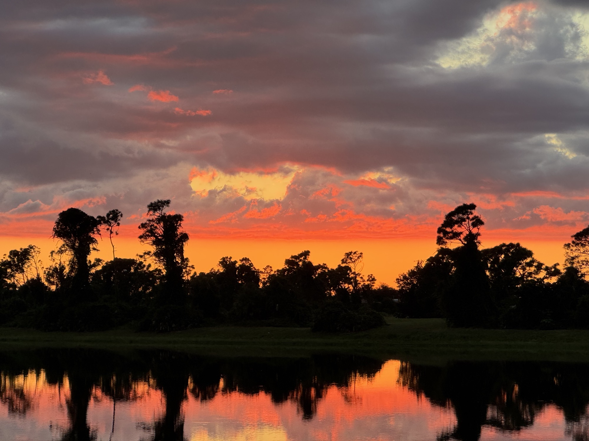

About
A quiet look at Florida’s wild and coastal places.
Hello, I’m Your Name
I photograph the soft side of Florida — early light on the water, still marshes, shorelines, and the birds that share these places with us.
These prints are for people who want a little calm on their walls: natural color, simple composition, and scenes that feel like a deep breath.
Every image is taken in Florida and prepared carefully for print. If you’re looking for a specific location, size, or gift idea, send me a message — I’m happy to help.
